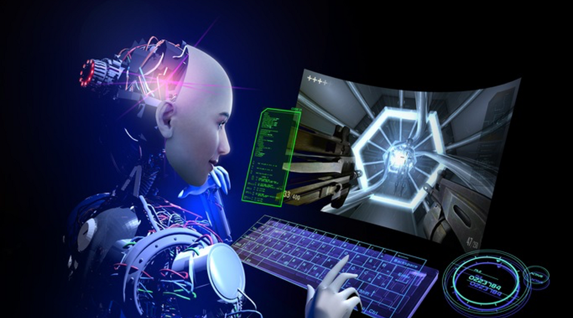
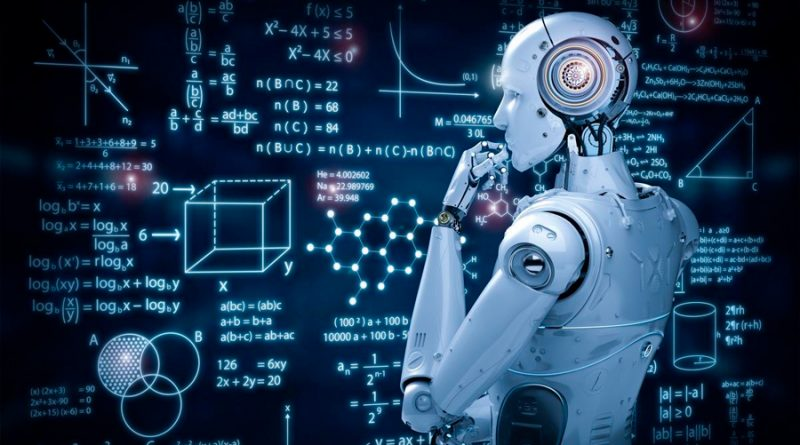

INTELIGENCIA ARTIFICIAL La inteligencia artificial en los videojuegos se crea mediante la programación de algoritmos que permiten a los personajes no jugables (NPCs) tomar decisiones y comportarse de manera autónoma dentro del mundo del juego. Estos algoritmos pueden variar en complejidad, desde simples patrones de movimiento hasta sistemas más avanzados que simulan la toma de decisiones basadas en el entorno y las acciones del jugador. Para crear la inteligencia artificial en los videojuegos, los desarrolladores suelen utilizar técnicas como la programación basada en reglas, algoritmos de búsqueda, aprendizaje automático y redes neuronales. Estos métodos permiten que los NPCs se comporten de manera realista y desafiantemente en función de las circunstancias del juego. En resumen, la inteligencia artificial en los videojuegos se crea mediante la implementación de algoritmos y técnicas de programación que permiten a los personajes no jugables actuar de manera autónoma e inteligente dentro del juego. 
Además de la programación de algoritmos, la inteligencia artificial en los videojuegos también puede involucrar el uso de técnicas como la toma de decisiones basada en árboles de comportamiento, donde se definen una serie de acciones posibles y sus condiciones para ser ejecutadas. También se pueden utilizar sistemas de planificación para que los NPCs puedan establecer objetivos a largo plazo y tomar decisiones estratégicas.
Otra técnica común es la implementación de algoritmos genéticos o algoritmos evolutivos para entrenar a los NPCs y mejorar su rendimiento a lo largo del tiempo. Esto permite que los personajes no jugables aprendan y se adapten a medida que juegas, creando una experiencia más dinámica y desafiante. En algunos casos, la inteligencia artificial en los videojuegos también puede incorporar sistemas de emociones simuladas para que los NPCs reaccionen de manera más realista a las acciones del jugador y al entorno del juego. 
En definitiva, la inteligencia artificial en los videojuegos es un campo en constante evolución que busca mejorar la interacción entre los jugadores y los personajes no jugables, creando experiencias más inmersivas y desafiantes en el mundo virtual. |